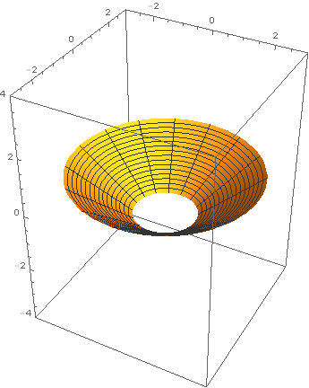

Blog index
Horikawa surfaces geometry
Mostly for my own convenience, here is an overview of the geometry of Horikawa surfaces (because I will forget most of this).
New blog functionality blog
At the behest of Pieter Belmans, I have now added an RSS feed to the blog to make it easier for people to follow. I have also added a blogroll. Below the line, I include the shell script which I used to generate the RSS feed for the blog.
Farmageddon environment

I have just finished reading the book Farmageddon by Philip Lymbery and Isabel Oakeshott. It is the most important book I have read in a number of years. It is a dazzling journalistic expose of how industrial-scale agriculture and factory farming has systematically raped the world's farmlands in the last half century.
A crib sheet for surfaces geometry
Every time I want to think about complex surfaces, I find I have forgotten what things like \(q(X)\) and \(p_g(X)\) mean and how they are related to things like \(c_1(X)\) and \(c_2(X)\). To save me carrying Barth-Peters-Van de Ven around with me, here is a blog post containing the basic definitions.
Update: See also this page of Pieter Belmans and Johan Commelin for an interactive complex surface explorer!
Clarification for arXiv:1606.08656 geometry errata
The paper Ivan Smith and I wrote on Lagrangian pinwheels in \(\mathbf{CP}^2\) and Markov numbers has recently appeared in Geometry and Topology. Shortly thereafter, Yong-Geun Oh contacted us with some excellent questions where our exposition was less than clear. In case anyone else has the same questions, I thought I would write a blog post clarifying these points.
Clarifications and errata errata
In the spirit of Michael Hutchings and Paul Seidel, I have decided to use this blog to keep track of clarifications and errata for my papers. Most of my papers say something wrong or inaccurate but nonfatal. In most cases, it doesn't seem worth filing a correction. But occasionally someone asks me about one of these things and, it being several years since I wrote the paper, I panic all over again trying to figure out why their question doesn't invalidate my work (piece of advice: when this happens to you, almost always trust your past self; they were much more familiar with the paper when they were writing it). I will keep the list below updated as I add more clarifications and errata to the blog.
Flipping teaching topology
I have decided that next year I am going to try lecture-flipping my topology module. Lecture-flipping is the practice whereby the lecturer prepares material for the students to view/read ahead of time, and the lecture is spent getting the students to explore the material in more depth and consolidate their understanding. I have decided to document my experience in case it's useful for other people thinking about flipping (specifically in the context of maths lectures).
In this blog post I want to review:
- why on earth I'm planning to do this,
- what it means in practice,
- what I've already done.
TikZ and org-mode blog org emacs tikz
As an org-mode newbie, it took me a while to figure out how to get TikZ code in my source files to generate images in my blog. This blog post explains the solution I found.
Noether's theorem in field theory qft
This blog post attempts to explain Noether's theorem in field theory (including Noether currents) in a way that might appeal to a mathematician familiar with symplectic topology and the Hamiltonian formalism. Hopefully someone will find it useful…
The Heisenberg picture and causality qft
This blog post summarises what we learned about propagators and causality in free scalar QFT.
What is a quantum field? qft
As a mathematician trying to learn QFT, a question that always bothered me was "what is a quantum field?". This blog post explains one point of view (the Schrödinger picture) on the answer to this question which I find satisfying.
Pre-QFT 1: the quantum harmonic oscillator qft
The archetypal physical system is the simple harmonic oscillator: a ball on a spring following Hooke's law follows periodic motion along a circle in phase space (its displacement and momentum oscillate sinusoidally between two extremes and out of phase like sin and cos). Understanding the corresponding quantum system is fundamental to understanding quantum field theory: indeed, quantising a free (bosonic) field turns out to be equivalent to quantising an infinite collection of simple harmonic oscillators.
Quantum field theory reading group qft
Like many people, I got into maths because I was interested in quantum field theory and didn't understand what was going on. I have spent a lot of time idly browsing QFT textbooks over the years in an effort to rectify this, but stuff always got in the way.
Ed Segal and I are planning to run a QFT reading group at UCL to improve our understanding. I will post my own notes from the reading group to this blog, as well as some foundational "pre-QFT" material which I always forget and have to re-read whenever I start looking into this stuff after a long break.
If you are interested in attending the reading group, please let Ed or me know.
Equivalence relations teaching topology
Equivalence relations are an important concept in mathematics, but sometimes they are not given the emphasis they deserve in an undergraduate course. Having a good grasp of equivalence relations is very important in the course MATHM205 (Topology and Groups) which I'm teaching this term, so I have written this blog post to remind you what you need to know about them. I will kick off with a few examples, then give a more formal definition.
Theorem and proof environments in CSS blog org
Here is a nice idea from Dr Z.ac, the blog of Zachary Harmany. You can use CSS to create LaTeX-style theorem/proof environments on a website.
Connecting to wifi from command line linux wifi
I so rarely need to connect to a new wifi network that, when I do, I always forget how I managed to do it the previous time. For future reference, here's how I did it this time (using "NetworkManager Command Line Interface" or "nmcli"):
$ nmcli dev wifi list $ nmcli dev wifi connect NETWORKNAME password NETWORKPASSWORD
New blog blog org emacs
I've decided that I don't like my old blog and I'm setting up a new blog using org-mode.
Resonances qft
How could you "detect" a new subatomic particle, given that it's so small you can't see it and (often) so short-lived that you'd miss it even if you didn't blink?
Nice paper bump qft
It's 7 years old, but I only just came across the following beautiful expository paper of Baez and Huerta on the representation theory underlying the standard model and grand unified theories and I thought I would give it a bump:
https://arxiv.org/abs/0904.1556
It overlaps with some of the material I touch on in the Lie Groups course I teach (using representations to classify particles) but goes into much more gorgeous detail and focuses on fundamental particles rather than baryons/mesons. It is unusually easy to follow (if you know a bit of representation theory) and I learned a lot from reading it.
Is the speed of light constant? relativity
I recently came across a beautiful argument due to De Sitter (1913), which gave the (first?) experimental evidence that light moves with a constant speed.
Constancy of the speed of light is one of those things that always bothered me, and I spent a couple of days recently trying to unbother myself. De Sitter's argument is what finally satisfied me. Below, I’m going to explain the background, then I'll explain De Sitter's argument. The De Sitter paper is only a couple of paragraphs long and is available via Wikisource, so if you don't need the introductory remarks in the blogpost below, just follow the link above and read it.
Using graphviz to illustrate course structure teaching
At some point last year, I got frustrated that I couldn’t see easily the global structure of the UCL undergraduate maths course without trawling through a bunch of PDFs, so I made this webpage to illustrate it. Hopefully some people have found this useful in deciding which modules to choose or in advising students which modules to take.
To generate the image maps I used a fantastic programme called graphviz. In case anyone wants to adapt what I did to their own ends, I have made my graphviz code for these diagrams (plus some ancillary shells scripts for creating and uploading the webpage) available here:
For more details, see the readme file.
Some simple spectral sequences geometry teaching
I keep finding myself trying to explain how the very simplest spectral sequences arise (spectral sequence to compute the cohomology of a cone or an iterated cone), so I have taken the time to TeX the explanation into a sequence of guided exercises. This is all very formal and diagram-chasy. One of the off-putting things about spectral sequences is all the indices; in these exercises I have suppressed gradings and concentrated on the very simplest cases to avoid overcomplicating the notation. Once you’ve seen how the proof goes, you should go and look in Bott-Tu or McCleary for some actual examples and computations.
Please let me know of any errors in the exercises!
A sanity check for the Fukaya category of a cotangent bundle geometry
Yesterday I gave a seminar about Fukaya categories and I didn't have chance to do quite as much explicit computation as I'd hoped. I thought I’d write a blog post with a basic calculation to show you the kind of things that are involved in doing computations in Fukaya categories. I will show (using Abouzaid's description of the zero section in terms of the cotangent fibre) that the zero section and the cotangent fibre have \(rank(HF) = 1\), in the special case of \(T^*S^1\). This is such a trivial result in the end (you could do the computation just by looking at the intersection and seeing it's a single point) that you should think of this post as more of a sanity check.
Cone eversion geometry
Last year, around the time Chris Wendl was running the h-principle learning seminar at UCL, I set my second years an exercise from Eliashberg-Mishachev as a difficult challenge problem: to find an explicit cone eversion. In other words, find a path in the space of functions on \(\{(r,\theta)\in\mathbf{R}^2\ :\ r\in[1,2]\}\) connecting \(r\) to \(2-r\) such that none of the intermediate functions has a critical point. One of these students, Tom Steeples, got hooked on the problem, almost solved it, and afterwards used Mathematica to produce some beautiful computer animations of a solution given by Tabachnikov in American Mathematical Monthly (1995) Vol 102, Issue 1, pp 52–56. Here is one of his images. Reproduced with Tom's kind permission (the copyright is his).

Gromoll filtration geometry
In my latest preprint with Georgios Dimitroglou Rizell, we use the topology of diffeomorphism groups of high-dimensional spheres to produce interesting examples of nontrivial topology in symplectomorphism groups of cotangent bundles. Until we started thinking about this, I didn’t know much about the higher homotopy groups of \(Diff(S^n)\) so here is some interesting stuff I learned while we were writing this paper.
E-learning project report teaching
My final report on the e-learning project "Video lectures filmed by students" is now available to download in PDF form.
The purpose of this e-learning project was to test the effectiveness and viability of getting students to film mathematics lectures and the effect on student learning of making these videos available. The project was made possible by an E-Learning Development Grant (ELDG) and by the cooperation of a large number of people who I thank at the end.
Disclaimer. The project analysis is not scientific: there is no attempt made at comparison with a control group, the data sets are not large and the statistical methods used to analyse them are crude. This report is intended to be at best a rough guide to the UCL Mathematics Departmental Teaching Committee as to what action to take on filming of mathematics lectures.
December: video project update elearning teaching
The video project has been progressing nicely: all of the videos have now been compressed and most have been uploaded to either Youtube or Lecturecast.
Geometry and undecidability geometry
These are the notes from a talk I gave to the UCL Undergraduate Mathematics Colloquium in early October and I would like to thank them for being such an attentive audience with so many good questions. The talk is a gentle introduction to the work of Nabutovsky and Weinberger, on how logical complexity gives rise to complexity for sublevel sets of functionals in geometry.
Video-lecture project weeks 1 and 2 elearning teaching
E-Learning: Video lectures filmed by students elearning teaching
I recently received a grant from the UCL e-learning team to run a project for filming maths lectures. Read on for more about the project.
E-Learning: Spring 2013 elearning teaching
Henry Wilton, Bonita Carboo and I are the UCL Maths Department's e-learning reps. In the interests of sharing ideas, here are a few things I have discovered this Spring about e-learning which may be useful to others.
Bored now teaching
I just read a BBC article about Jimmy Wales called "Boring university lectures are doomed" and the title and the tone of the article made me angry. As a boring university lecturer, I felt I should speak out.
The geometric definition of the Johnson homomorphism topology geometry
I have recently been thinking about Torelli groups.
The Torelli group of a surface is the subgroup of mapping classes which act trivially on cohomology. Consider the case of an orientable surface with \(g\) handles and one boundary component (diffeomorphisms are required to fix the boundary). There is a famous homomorphism from this group to the free abelian group of rank \({2g\choose 3}\) called the Johnson homomorphism. The usual definition is pretty algebraic-looking (involving the mapping class group action on the fundamental group and its commutator subgroup). This week I read an alternative (extremely beautiful, geometric) definition of this homomorphism in Johnson's survey paper on the Torelli group (D. Johnson, A survey of the Torelli group, Contemp. Math. (1983) vol. 20, 165-179). This definition is probably very well-known, but I didn't formerly know it and I thought it was too nice not to blog about.
TikZ code for the octahedral axiom algebra tikz
If anyone finds it useful, I've created a LaTeX command for drawing the octahedral axiom (requires the TikZ package) based on this example of Stefan Kottwitz. You can easily edit the code to add labels to arrows (they would go in the empty brackets in the lines that say "edge") or add these as extra arguments to the function.
Include the following code in the head of your LaTeX document:
\usepackage{tikz}
\usetikzlibrary{arrows}
\newcommand{\Octa}[6]{\begin{center}
\begin{tikzpicture}[node distance=2cm,thick]
\node (1) {$X$};
\node (4) [below right of=1] {$A$};
\node (6) [below right of=4] {$C$};
\node (2) [above right of=4] {$Y$};
\node (5) [above right of=6] {$B$};
\node (3) [above right of=5] {$Z$};
\draw[->] (1) to[out=25,in=155] (3);
\draw[->] (1) -- (2);
\draw[->] (2) -- (3);
\draw[->] (2) -- (4);
\draw[->] (3) -- (5);
\draw[->] (3) to[out=260,in=0] (6);
\draw[->] (4) -- (6);
\draw[dashed,->] (4) -- (1);
\draw[->] (6) -- (5);
\draw[dashed,->] (4) -- (1);
\draw[dashed,->] (5) -- (4);
\draw[dashed,->] (5) -- (2);
\draw[dashed,->] (6) to[out=180,in=270] (1);
\end{tikzpicture}
\end{center}}
Then the command
\Octa{X}{Y}{Z}{A}{B}{C}
will produce a diagram like this:
Convex Integration (talk notes) topology
In case you were unable to take notes from my talk (either because you were unable to attend or because you were present) I've written them up below in some detail. They're basically just a summary of Borrelli's notes.
Also relevant is the preliminary cartoon which contains many of the essential ideas.
Warning: Images are large may take some time to load.
Convex integration (cartoon) topology
On Thursday I'll be giving a talk on convex integration at the London h-principle learning seminar. This will be a dry and technical subject, so I thought I'd create some light-hearted preliminary reading. Here then, in cartoon-form, is the simplest version of 1-dimensional convex integration, used to construct an immersed loop in the plane whose tangent vector has winding number zero.
The technical details of the talk will be heavily based on these notes by Vincent Borrelli, which is an excellent place to learn all this stuff from.
Warning: The cartoon is big (about 1MB) and may take time to load.
Kronheimer's argument: Small resolutions and Dehn twists geometry topology
I want to amplify an expository argument I gave in a recent lecture which shows that the squared Dehn twist on a symplectic 4-manifold is smoothly isotopic to the identity map. This is an old argument of Kronheimer and I only managed to sketch it hurriedly in the lecture. A few people have asked me to explain this to them in the past, so…
…here's an explanation to which I can point people in future.
Symplectic/Contact Geometry VII at Les Diablerets, Day 1 geometry topology
I'm currently in Switzerland at the seventh "Symplectic Geometry, Contact Geometry and Interactions" Workshop funded by CAST. This is a yearly conference which started at the same time I started my PhD so I have a great fondness for these workshops. This one is in the mountains, which makes me even fonder…

After three excellent talks today I decided to act as a "maths journalist" and summarise the main ideas from the talks in this blog. I may not be able to keep this up, as there's six talks tomorrow and too much snow to enjoy. Today's talks were:
- Urs Frauenfelder "A \(\Gamma\)-structure on the Lagrangian Grassmannian"
- Yochay Jerby "The symplectic topology of projective manifolds with small dual"
- Alex Ritter "Floer theory for negative line bundles"
UCL Geometry and Topology Open Day talk: Floer theory geometry topology
These are the notes from the twenty minute talk I'm going to give at the UCL Geometry and Topology Open Day for prospective PhD students (November 14th 2012). For those who are interested in reading more, check out Milnor's book on Morse theory and Atiyah's early survey paper on Floer theory.
Why Schrödinger's equation? quantum
"Why this equation?"
I recently overheard someone ask this about Schrödinger's equation. The answer they received was, for me, unsatisfying. "Because it agrees with experiment." Of course, that answers perfectly why the equation was adopted by future generations of physicists and indeed the calculation of the spectrum of atomic hydrogen from the energy eigenvalues of the Schrödinger operator is one of the most convincing and wholesome computations a young physicist can do. But the question that was left unanswered, the question I believe was being asked, was: "Why did Schrödinger write this equation down? Why not something else?" I don't believe for a second that Schrödinger sat down with an array of different equations and worked out what each of them predicted about hydrogen before he found the one that fit…
HEA course for new maths lecturers teaching
Last week I had the pleasure of attending a course for new maths lecturers run by the Maths, Stats and Operations Research discipline of the Higher Education Academy (HEA/MSOR). I was pleased that it dispelled several myths for me, in particular the myth that these courses never cater for mathematicians' needs. All the talks were given by experienced mathematics lecturers or people who have spent a considerable amount of time undertaking educational research specific to university-level maths. With such good quality input, and with the high level of engagement discussion amongst the participants, I learned a lot.
Read on for a couple of ideas I took away (not necessarily maths-specific!).
Lines through four lines geometry
(Reposting this from an earlier blog which I gave up on, but liked the post so I added some pictures – all images produced using the amazing free alternative to Maple/Mathematica, Sage).
I was reading Fulton-Pandharipande ("Notes on stable maps and quantum cohomology") the other day and came across the classical result that there are exactly two lines passing through a generic quadruple of lines in \(\mathbf{CP}^3\). I encourage people to whom this fact is unfamiliar to convince themselves of it. It was unfamiliar to me and I found it hard to visualise, so I sat down and drew some pictures until I understood it.
Quantum computers: Grover's algorithm quantum
I've been meaning to get my head around the idea of a quantum computer for a while now and, since my mathematical energy is currently reduced to clearing out my ETH office, I thought I'd do some reading and find out more. I leafed through my dusty copy of Wikipedia, picked up Kitaev et al from the library and turned to chapter two…
I think the easiest way to illustrate how a quantum computer differs (functionally) from a classical computer is by explaining an algorithm which only makes sense for quantum computers and which really outperforms a classical algorithm for the same task (that is the point of quantum computers, after all). The first algorithm they explain in Kitaev et al is called Grover's algorithm and it performs the task of searching a database. Wikipedia has a really nice exposition too, but I was initially confused by what they both call a "quantum oracle" (sounds like something from Star Trek TNG). I tried to explicitly avoid that in what I said below.
TLDR: Classically you have to look through all \(N\) elements of a database until you find the right one (so runtime increases linearly in N); Grover's algorithm has a surprising runtime of order \(\sqrt{N}\) to do the same thing, using clever ideas from quantum mechanics.